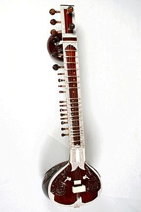

Ситар — струнный щипковый музыкальный инструмент типа лютни, используемый для исполнения индийской классической музыки.
Основных струн у ситара семь: пять мелодических и две бурдонных. Помимо того на ситаре ещё 9—13 резонирующих струн, которые называются тараф (оркестр). Резонирующие струны, отзываясь на звуки основных, создают то уникальное звучание, которое отличает ситар от других инструментов. Звуки извлекают специальным медиатором, называемым «мизраб», надеваемым на указательный палец.
Название, вероятно, происходит от персидского «сетар» — прародителя многих струнных инструментов Востока. Появился ситар в Индии в XIII веке в период усиления мусульманского влияния и выглядел первоначально примерно так, как его близкий родственник — таджикский сетор, который, однако, трёхструнный (се означает три). Ситар имеет два тыквенных резонатора: внизу и на верхушке пустотелого грифа, дека украшена палисандром и слоновой костью, лады металлические дугообразные.
До появления ситара народы Индии играли на древнем струнном щипковом инструменте, изображения которого сохранились на древних барельефах II—III веков нашей эры (см. вина).
Впервые в рок-музыке ситар использовался Джорджем Харрисоном в песне The Beatles «Norwegian Wood (This Bird Has Flown)», записанной в альбоме Rubber Soul в 1965 году.
